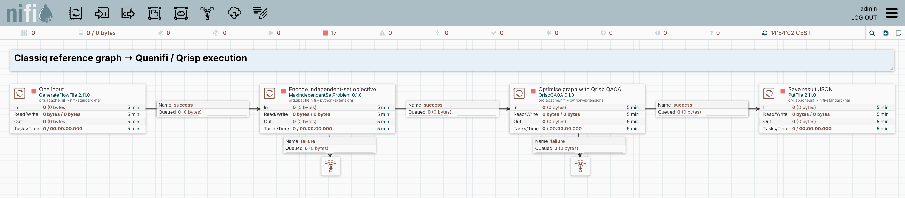

Find vertices that
can coexist.
A maximum independent set contains as many vertices as possible, with no edge joining any two selected vertices. Here, the graph from Classiq’s example travels through a Quanifi encoder and a local Qrisp QAOA solver.
This flow adapts the Classiq maximum-independent-set notebook at revision afddcce50118. It uses the same graph and problem, but a different implementation and optimisation objective. The saved results are from Quanifi/Qrisp, not Classiq cloud execution.
1. One graph, two implementations
| Aspect | Classiq reference notebook | This executable Quanifi flow |
|---|---|---|
| Graph | 8 nodes; edge probability 0.4; seed 12345. | The same 14 edges, stored explicitly as an input fixture. |
| Problem | Maximise selected vertices subject to no adjacent selected pair. | Minimise −|S| + 2 × selected-edge conflicts; its global minima solve the same MIS problem. |
| Encoder | Pyomo model translated by CombinatorialProblem. | MaxIndependentSetProblem produces a sparse Pauli Hamiltonian. |
| Solver | Classiq synthesis and CVaR optimisation, quantile 0.7. | QrispQAOA, RX mixer, COBYLA, mean-cost optimisation. |
| Depth and iterations | 3 QAOA layers; maxiter 60. | 3 QAOA layers; 60 requested optimiser iterations; 1024 final shots. |
| Validation | Notebook compares with a classical solver. | Independent enumeration of all 256 vertex subsets. |
The solver’s internal circuit synthesis, parameter optimisation, and sampling are encapsulated in a single processor. Quanifi’s visible composition connects graph input, Hamiltonian encoding, the solver, and file output. Reusing the same QAOA processor as the portfolio example illustrates the shared representation between different problem encoders.
2. Explore the graph
The highlighted vertices are the best sampled set from the archived run. Toggle a vertex to see whether your selection is independent. This browser interaction checks the classical graph only; it does not rerun QAOA.
3. Follow the complete flow
- 01Read graphGenerateFlowFile supplies the explicit JSON edge list.
- 02Encode constraintsMaxIndependentSetProblem maps the graph to an eight-qubit cost Hamiltonian.
- 03Optimise & sampleQrispQAOA trains a three-layer circuit and samples it locally.
- 04Save resultPutFile writes the probability distribution.

4. Inspect inputs and settings
Exact input graph JSON
{
"edges": [
[
0,
2
],
[
0,
4
],
[
0,
6
],
[
0,
7
],
[
1,
2
],
[
1,
4
],
[
1,
5
],
[
2,
4
],
[
2,
5
],
[
2,
6
],
[
3,
4
],
[
3,
5
],
[
3,
6
],
[
5,
6
]
]
}Classiq reference graph → Quanifi / Qrisp execution
MaxIndependentSetProblem — properties
| Property | Configured value |
|---|---|
| Edges | [[0, 2], [0, 4], [0, 6], [0, 7], [1, 2], [1, 4], [1, 5], [2, 4], [2, 5], [2, 6], [3, 4], [3, 5], [3, 6], [5, 6]] |
| Num Nodes | 8 |
| Penalty Factor | 2.0 |
QrispQAOA — properties
| Property | Configured value |
|---|---|
| Layers | 3 |
| Mixer Type | RX |
| Optimizer | COBYLA |
| Max Iterations | 60 |
| Shots | 1024 |
| Initial Parameters | 0.2,0.4,0.6,0.8,1.0,1.2 |
| Random Seed | 12345 |
Each source creates one JSON input using Run Once (an explicit edge list for MIS, otherwise an empty object). The algorithm parameters are processor properties. PutFile saves the returned probability distribution. The portable flow export uses ./supplementary-results as its output directory. Algorithm failures route to visible inspection queues.
The MIS source carries the graph in its FlowFile content. The Edges property is a fallback; the incoming graph takes precedence. Num Nodes is explicitly 8. The encoder emits hamiltonian.format=sparse_pauli_op_json, which the same solver used in the portfolio flow understands.
5. Saved results and exact validation
The recorded best sample is 11010000, selecting vertices 0, 1, 3. It contains 3 vertices and 0 conflicting edges. Its penalised cost is -3. The independent checker enumerates every subset and verifies the reported best cost, the exact optimum, and the distribution’s mean cost (-0.714844).
Bits in the saved output are interpreted left to right as vertices 0 through 7. An optimal sample is not the same as the most probable sample. The plot below shows the twelve most probable outputs; the downloadable evidence includes the entire distribution.
All exact maximum independent sets
| Bitstring | Vertices |
|---|---|
00001011 | 4, 6, 7 |
00001101 | 4, 5, 7 |
00110001 | 2, 3, 7 |
01000011 | 1, 6, 7 |
01010001 | 1, 3, 7 |
11010000 | 0, 1, 3 |
Captured 2026-09-14T12:43:40.134048+00:00. The seed is best-effort; new QAOA runs can differ. Probabilities are returned by Qrisp from the configured 1024-shot final sampling.
6. Reproduce the adaptation
Follow the NiFi import instructions, using the downloaded flow and the supplied MIS encoder, QAOA processor, and Hamiltonian helper. No Classiq account is needed for this adaptation.
The reference graph is fixed as explicit edges, so a future change in a random-graph library cannot silently change the problem. Differences in solver implementation and CVaR versus mean-cost optimisation prevent interpreting these results as a numerical reproduction of Classiq’s notebook.